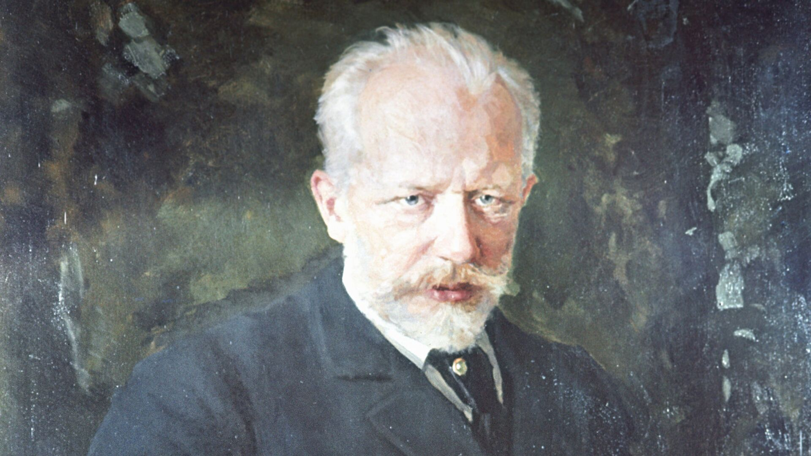
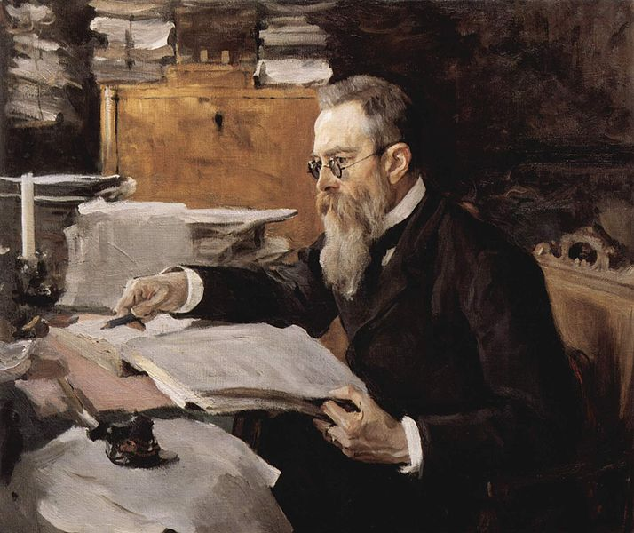

Pyotr Tchaikovsky
The parents wanted Pyotr Tchaikovsky to become a lawyer, but he was passionate about music from childhood. Pyotr Tchaikovsky entered the history of world classical music as the author of ten operas, three ballets, and seven symphonies.
"Waltz of the Flowers" (1892) is a part of Pyotr Ilyich Tchaikovsky's ballet "The Nutcracker," written in 1892. This waltz is one of the most well-known and beloved moments in the ballet. In this section, flowers dance against the backdrop of a magical garden. The composition exudes magic and beauty, becoming a classic piece in the repertoire of classical music.
Nikolai Rimsky-Korsakov
In his childhood, Nikolai Rimsky-Korsakov loved geography and dreamed of becoming a sailor. However, during his circumnavigation, he wanted to return to land as soon as possible to dedicate himself to music.
"The Flight of the Bumblebee" is a musical piece composed by Nikolai Rimsky-Korsakov. It is an orchestral interlude from his opera "The Tale of Tsar Saltan," specifically from Act III. The piece is known for its fast-paced and virtuosic violin passages, representing the frenetic flight of a bumblebee.